I nostri modelli sono una selezione di forme tradizionali pensate per tutti i livelli
Simboli internazionali origami
Piega a valle

 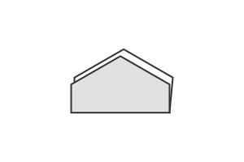
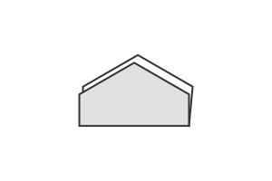
Piegare e riaprire a valle


Piega a monte
 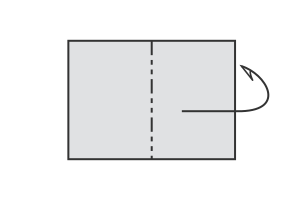
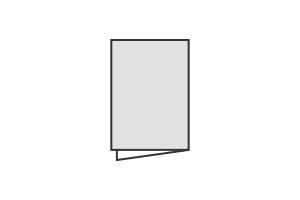
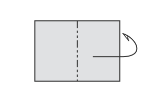
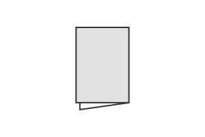
Piegare e riaprire a monte


Ripetere la piega una volta, due volte, tre volte ecc.
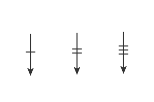 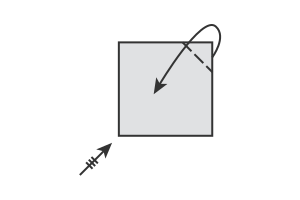
Portare punto su punto


Inserire sotto lo strato
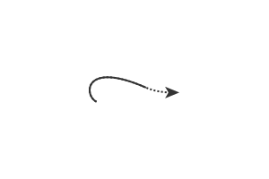

Bordi nascosti


Voltare la figura
 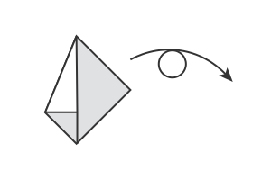
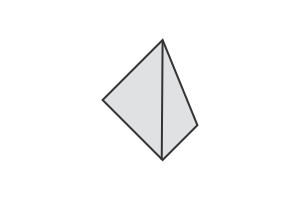
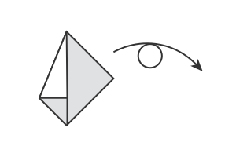
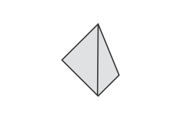
Spingere, schiacciare, mandare all'interno


Ruotare per orientare diversamente la figura
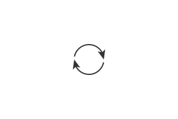 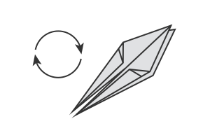
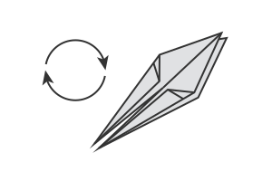
Piegare la bisettrice di un angolo
 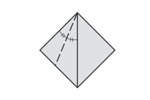
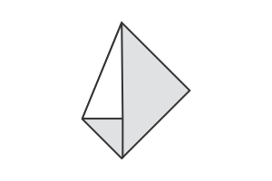
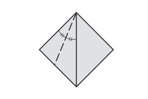
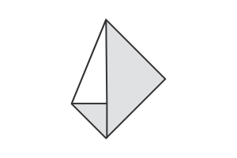
Crimp
 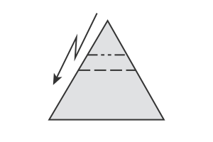
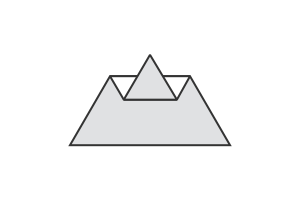
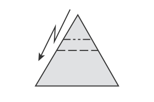
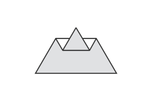
Crimp simmetrico


Riaprire una o più pieghe, uno o più strati
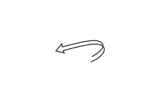 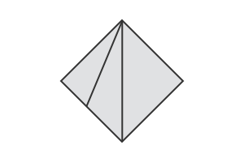
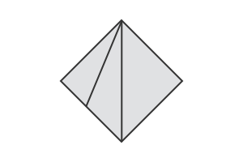
Figura ingrandita


Figura rimpicciolita


Pinch


Piegare a 90°
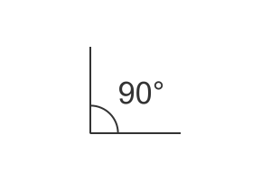Gonfiare

Passaggio alla terza dimensione